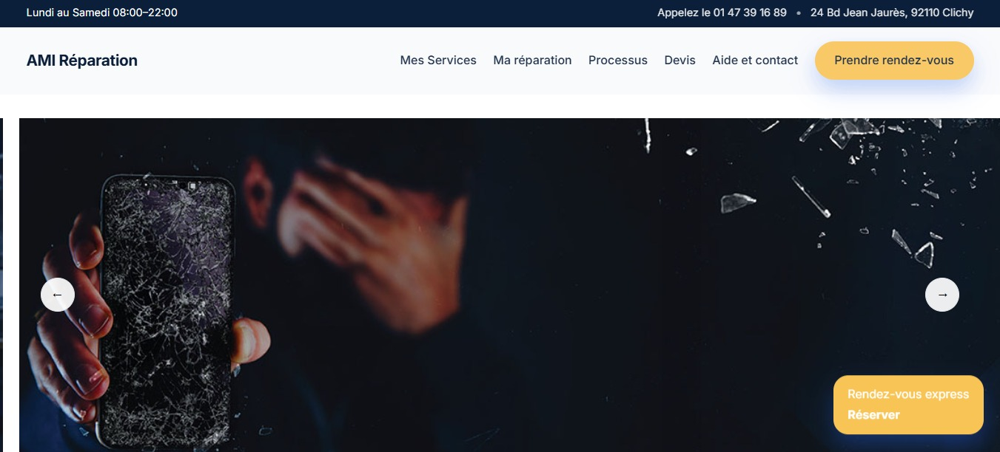
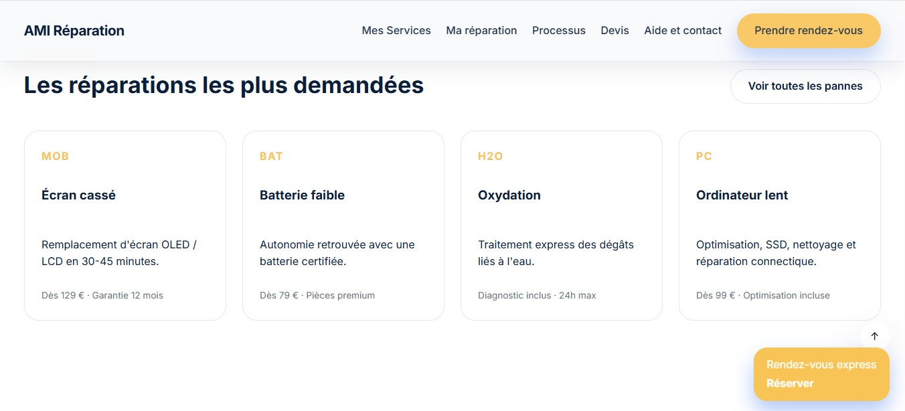
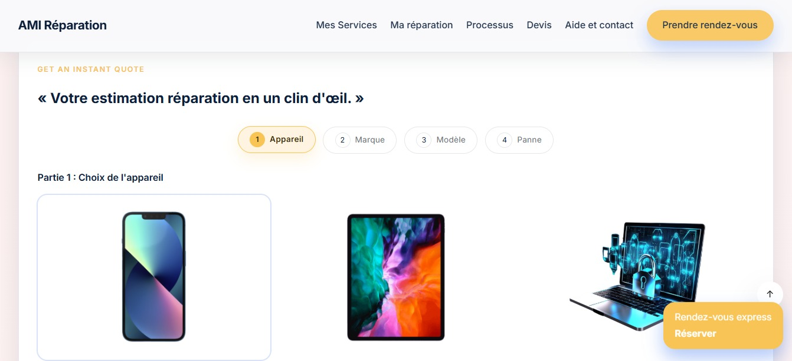
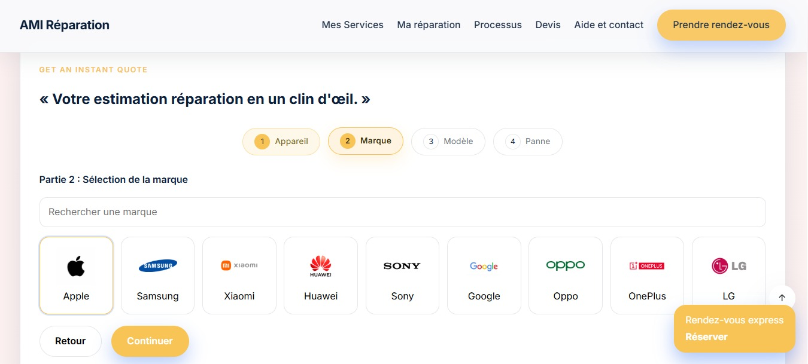
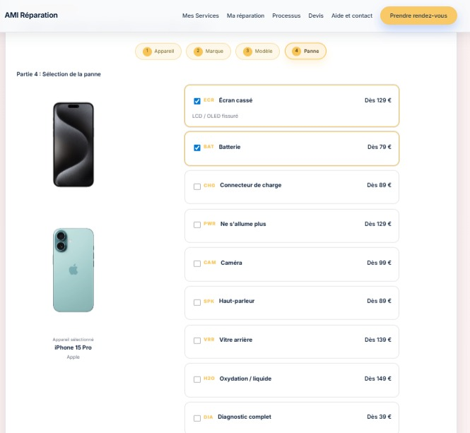
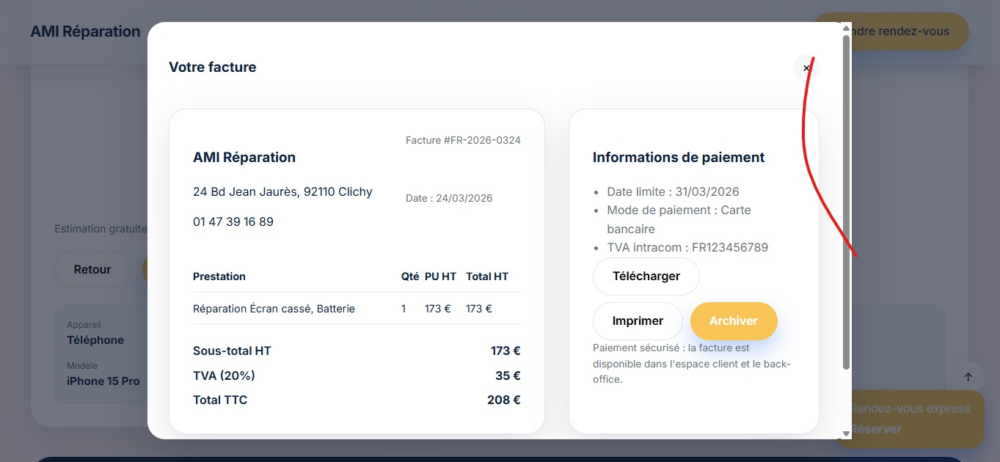
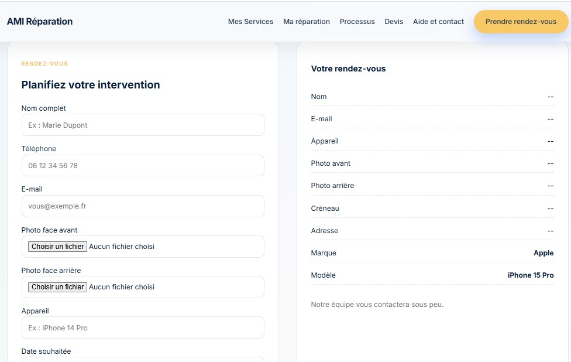

L’interface client de RepairHub a été conçue pour offrir une expérience simple, claire et efficace permettant au client de suivre l’état de sa réparation en temps réel.
Le client accède à son espace via un lien sécurisé ou un identifiant fourni lors de la prise en charge, garantissant la confidentialité des informations.
Le client peut visualiser les informations principales de son appareil : type, marque, modèle ainsi que le problème signalé.
Le système affiche l’état d’avancement : En attente → En cours → Réparé → Terminé.
Le client peut consulter et accepter ou refuser un devis directement depuis l’interface.
Une notification est envoyée lorsque la réparation est terminée, permettant au client d’être informé rapidement.
Une fois la réparation terminée, le dossier est archivé, permettant un suivi historique des interventions.
Dans le cadre de mon stage, j’ai réalisé un cahier des charges complet afin de concevoir l’interface client de RepairHub. Ce document décrit précisément le parcours utilisateur et les différentes étapes du processus de réparation.
Le parcours utilisateur se déroule en plusieurs étapes :
• Choix du type d’appareil (téléphone, tablette, ordinateur)
• Sélection de la marque
• Choix du modèle
• Sélection de la panne avec estimation du prix
• Génération du devis et de la facture
Ce cahier des charges m’a permis de structurer le projet et de faciliter la communication avec l’ingénieur informatique en charge du développement.
Voir le cahier des charges





